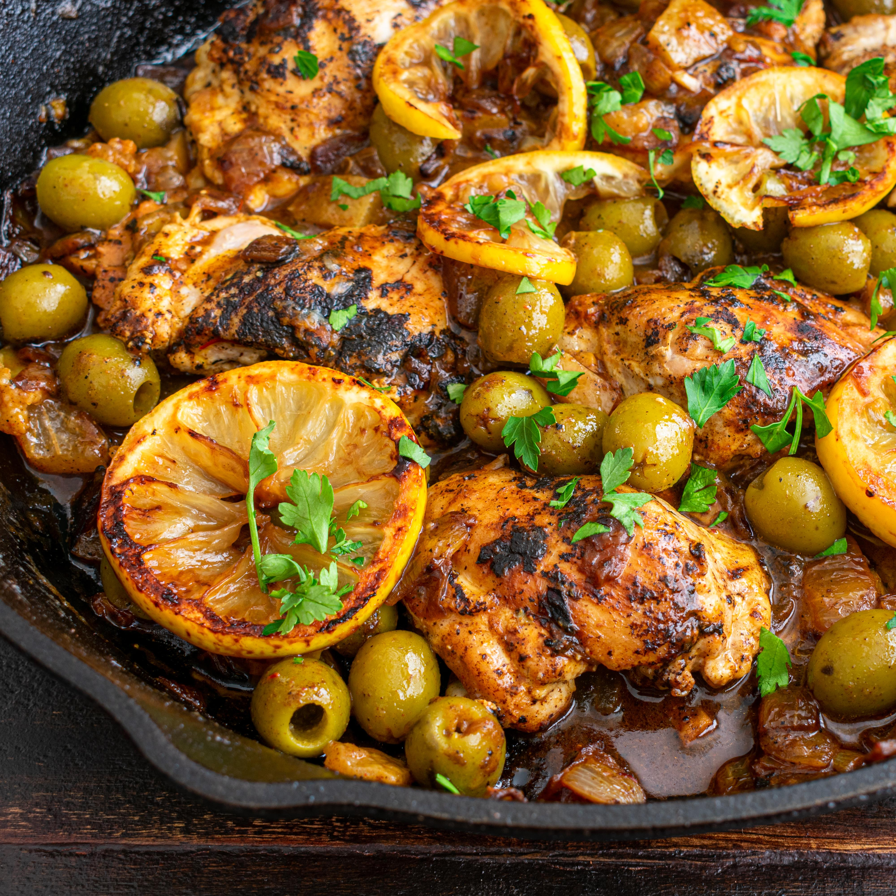

Chicken with lemon

Ingredients
- 4 Chicken thighs
- Garlic
- 2 white onions
- Ginger
- Olive oil
- Salt and pepper
- 1 yellow lemon
- Flour
- Coriander, basil, parsley, and chervil
- Poultry stock
- Green olives
Steps
- Prepare the garnish: cut the ginger into a julienne, thinly slice the onions, and crush the garlic.
- Brown the chicken in two spoonfuls of oil and season it. Remove it from the pan when it is done.
- Sauté the garnish in the same pan. Meanwhile, blanch the lemons twice (starting in cold water).
- Dust the garnish with flour and add the chicken.
- Add some poultry stock to the mixture and bring it to gentle boil.
- Cut the lemons into quarters
- Add the lemons and olives after 45 minutes of cooking. Let cook for 5–10 minutes, then add the cilantro.